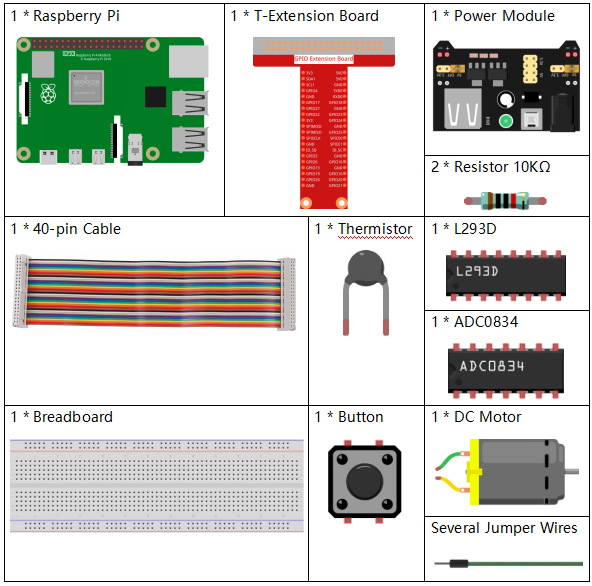
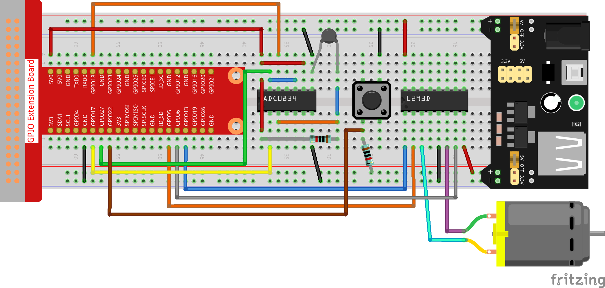

Bemerkung
Hallo und willkommen in der SunFounder Raspberry Pi & Arduino & ESP32 Enthusiasten-Gemeinschaft auf Facebook! Tauchen Sie tiefer ein in die Welt von Raspberry Pi, Arduino und ESP32 mit anderen Enthusiasten.
Warum beitreten?
Expertenunterstützung: Lösen Sie Nachverkaufsprobleme und technische Herausforderungen mit Hilfe unserer Gemeinschaft und unseres Teams.
Lernen & Teilen: Tauschen Sie Tipps und Anleitungen aus, um Ihre Fähigkeiten zu verbessern.
Exklusive Vorschauen: Erhalten Sie frühzeitigen Zugang zu neuen Produktankündigungen und exklusiven Einblicken.
Spezialrabatte: Genießen Sie exklusive Rabatte auf unsere neuesten Produkte.
Festliche Aktionen und Gewinnspiele: Nehmen Sie an Gewinnspielen und Feiertagsaktionen teil.
👉 Sind Sie bereit, mit uns zu erkunden und zu erschaffen? Klicken Sie auf [hier] und treten Sie heute bei!
3.1.4 Smart Fan
Einführung
In diesem Kurs werden wir Motoren, Tasten und Thermistoren verwenden, um einen manuellen + automatischen intelligenten Lüfter herzustellen, dessen Windgeschwindigkeit einstellbar ist.
Komponenten
Schematische Darstellung
T-Karte Name |
physisch |
wiringPi |
BCM |
GPIO17 |
Pin 11 |
0 |
17 |
GPIO18 |
Pin 12 |
1 |
18 |
GPIO27 |
Pin 13 |
2 |
27 |
GPIO22 |
Pin 15 |
3 |
22 |
GPIO5 |
Pin 29 |
21 |
5 |
GPIO6 |
Pin 31 |
22 |
6 |
GPIO13 |
Pin 33 |
23 |
13 |

Experimentelle Verfahren
Schritt 1: Bauen Sie die Schaltung auf.
{kind=link}
Bemerkung
The power module can apply a 9V battery with the 9V Battery Buckle in the kit. Insert the jumper cap of the power module into the 5V bus strips of the breadboard.

Für Benutzer in C-Sprache
Schritt 2: Gehen Sie in den Ordner der Kode.
cd ~/davinci-kit-for-raspberry-pi/c/3.1.4/
Schritt 3: Kompilieren.
gcc 3.1.4_SmartFan.c -lwiringPi -lm
Schritt 4: Führen Sie die obige ausführbare Datei aus.
sudo ./a.out
Starten Sie den Lüfter, während der Kode ausgeführt wird, indem Sie die Taste drücken. Jedes Mal, wenn Sie drücken, wird 1 Geschwindigkeitsstufe nach oben oder unten eingestellt. Es gibt 5 Arten von Geschwindigkeitsstufen: 0~4. Wenn Sie die vierte Geschwindigkeitsstufe einstellen und die Taste drücken, arbeitet der Lüfter nicht mehr mit einer Windgeschwindigkeit von 0.
Sobald die Temperatur länger als 2℃, steigt oder fällt, wird die Geschwindigkeit automatisch um 1 Grad schneller oder langsamer.
Code Erklärung
int temperture(){
    unsigned char analogVal;
    double Vr, Rt, temp, cel, Fah;
    analogVal = get_ADC_Result(0);
    Vr = 5 * (double)(analogVal) / 255;
    Rt = 10000 * (double)(Vr) / (5 - (double)(Vr));
    temp = 1 / (((log(Rt/10000)) / 3950)+(1 / (273.15 + 25)));
    cel = temp - 273.15;
    Fah = cel * 1.8 +32;
    int t=cel;
    return t;
}
temperture() wandelt die von ADC0834 gelesenen Thermistorwerte in Temperaturwerte um. Siehe 2.2.2 Thermistor für weitere Details.
int motor(int level){
    if(level==0){
        digitalWrite(MotorEnable,LOW);
        return 0;
    }
    if (level>=4){
        level =4;
    }
    digitalWrite(MotorEnable,HIGH);
    softPwmWrite(MotorPin1, level*25);
    return level;
}
Diese Funktion steuert die Drehzahl des Motors. Der Bereich der Stufe: 0-4 (Stufe 0 stoppt den Arbeitsmotor). Eine Stufeneinstellung steht für eine 25% ige Änderung der Windgeschwindigkeit.
int main(void)
{
    setup();
    int currentState,lastState=0;
    int level = 0;
    int currentTemp,markTemp=0;
    while(1){
        currentState=digitalRead(BtnPin);
        currentTemp=temperture();
        if (currentTemp<=0){continue;}
        if (currentState==1&&lastState==0){
            level=(level+1)%5;
            markTemp=currentTemp;
            delay(500);
        }
        lastState=currentState;
        if (level!=0){
            if (currentTemp-markTemp<=-2){
                level=level-1;
                markTemp=currentTemp;
            }
            if (currentTemp-markTemp>=2){
                level=level+1;
                markTemp=currentTemp;
            }
        }
        level=motor(level);
    }
    return 0;
}
Die Funktion main() enthält den gesamten Programmablauf wie folgt:
Lesen Sie ständig den Tastenstatus und die aktuelle Temperatur ab.
Jede Presse erreicht Stufe+1 und gleichzeitig wird die Temperatur aktualisiert. Die Stufe reicht von 1~4..
Während der Lüfter arbeitet (der Niveau ist nicht 0), wird die Temperatur erfasst. Eine Änderung von 2℃+ bewirkt das Auf und Ab des Levels.
Der Motor ändert die Drehzahl mit der Stufe.
Für Python-Sprachbenutzer
Schritt 2: Gehen Sie in den Ordner der Kode.
cd ~/davinci-kit-for-raspberry-pi/python
Schritt 3: Ausführen.
sudo python3 3.1.4_SmartFan.py
Starten Sie den Lüfter, während der Kode ausgeführt wird, indem Sie die Taste drücken. Jedes Mal, wenn Sie drücken, wird 1 Geschwindigkeitsstufe nach oben oder unten eingestellt. Es gibt 5 Arten von Geschwindigkeitsstufen: 0~4. Wenn Sie die vierte Geschwindigkeitsstufe einstellen und die Taste drücken, arbeitet der Lüfter nicht mehr mit einer Windgeschwindigkeit von 0.
Sobald die Temperatur länger als 2℃, steigt oder fällt, wird die Geschwindigkeit automatisch um 1 Grad schneller oder langsamer.
Code
Bemerkung
Sie können den folgenden Code Ändern/Zurücksetzen/Kopieren/Ausführen/Stoppen . Zuvor müssen Sie jedoch zu einem Quellcodepfad wie davinci-kit-for-raspberry-pi/python gehen.
import RPi.GPIO as GPIO
import time
import ADC0834
import math
# Set up pins
MotorPin1 = 5
MotorPin2 = 6
MotorEnable = 13
BtnPin = 22
def setup():
global p_M1,p_M2
ADC0834.setup()
GPIO.setmode(GPIO.BCM)
GPIO.setup(MotorPin1, GPIO.OUT)
GPIO.setup(MotorPin2, GPIO.OUT)
p_M1=GPIO.PWM(MotorPin1,2000)
p_M2=GPIO.PWM(MotorPin2,2000)
p_M1.start(0)
p_M2.start(0)
GPIO.setup(MotorEnable, GPIO.OUT, initial=GPIO.LOW)
GPIO.setup(BtnPin, GPIO.IN)
def temperature():
analogVal = ADC0834.getResult()
Vr = 5 * float(analogVal) / 255
Rt = 10000 * Vr / (5 - Vr)
temp = 1/(((math.log(Rt / 10000)) / 3950) + (1 / (273.15+25)))
Cel = temp - 273.15
Fah = Cel * 1.8 + 32
return Cel
def motor(level):
if level == 0:
GPIO.output(MotorEnable, GPIO.LOW)
return 0
if level>=4:
level = 4
GPIO.output(MotorEnable, GPIO.HIGH)
p_M1.ChangeDutyCycle(level*25)
return level
def main():
lastState=0
level=0
markTemp = temperature()
while True:
currentState =GPIO.input(BtnPin)
currentTemp=temperature()
if currentState == 1 and lastState == 0:
level=(level+1)%5
markTemp = currentTemp
time.sleep(0.5)
lastState=currentState
if level!=0:
if currentTemp-markTemp <= -2:
level = level -1
markTemp=currentTemp
if currentTemp-markTemp >= 2:
level = level +1
markTemp=currentTemp
level = motor(level)
def destroy():
GPIO.output(MotorEnable, GPIO.LOW)
p_M1.stop()
p_M2.stop()
GPIO.cleanup()
if __name__ == '__main__':
setup()
try:
main()
except KeyboardInterrupt:
destroy()
Code Erklärung
def temperature():
    analogVal = ADC0834.getResult()
    Vr = 5 * float(analogVal) / 255
    Rt = 10000 * Vr / (5 - Vr)
    temp = 1/(((math.log(Rt / 10000)) / 3950) + (1 / (273.15+25)))
    Cel = temp - 273.15
    Fah = Cel * 1.8 + 32
    return Cel
temperature() wandelt von ADC0834 gelesene Thermistorwerte in Temperaturwerte um. Siehe 2.2.2 Thermistor für weitere Details.
def motor(level):
    if level == 0:
        GPIO.output(MotorEnable, GPIO.LOW)
        return 0
    if level>=4:
        level = 4
    GPIO.output(MotorEnable, GPIO.HIGH)
    p_M1.ChangeDutyCycle(level*25)
    return level
Diese Funktion steuert die Drehzahl des Motors. Der Bereich des Hebels: 0-4 (Stufe 0 stoppt den Arbeitsmotor). Eine Stufeneinstellung steht für eine 25% ige Änderung der Windgeschwindigkeit.
def main():
    lastState=0
    level=0
    markTemp = temperature()
    while True:
        currentState =GPIO.input(BtnPin)
        currentTemp=temperature()
        if currentState == 1 and lastState == 0:
            level=(level+1)%5
            markTemp = currentTemp
            time.sleep(0.5)
        lastState=currentState
        if level!=0:
            if currentTemp-markTemp <= -2:
                level = level -1
                markTemp=currentTemp
            if currentTemp-markTemp >= 2:
                level = level +1
                markTemp=currentTemp
        level = motor(level)
Die Funktion main() enthält den gesamten Programmablauf wie folgt:
Lesen Sie ständig den Tastenstatus und die aktuelle Temperatur ab.
Jede Presse erreicht Stufe+1 und gleichzeitig wird die Temperatur aktualisiert. Die Stufe reicht von 1~4..
Während der Lüfter arbeitet (der Niveau ist nicht 0), wird die Temperatur erfasst. Eine Änderung von 2℃+ bewirkt das Auf und Ab des Levels.
Der Motor ändert die Drehzahl mit der Stufe.
Phänomen Bild